BREAKING: The US is officially closing its last major military base in Iraq after spending more than 23 years and $1.7 trillion in the country. A US defense official said the military is airlifting its last equipment and personnel out of Erbil, the last US base in Iraq. Some US Marines will remain to protect American "diplomatic missions," along with contractors to maintain Iraq’s fleet of F-16 fighter jets and American-made tanks. "We don’t think we need the military there anymore," Trump said.
🚨 NOW: SecWar Pete Hegseth just launched "FORTRESS AMERICA" which will FORCE every single military installation in the US to produce its own electricity, independently from the grid — keeping us more immune from infrastructure attacks
It will also SURGE stockpiles and ensure critical minerals, propellants and more for national security will NEVER be cut off in time of war: A full-blown "insurance policy" for the entire nation
THIS IS AMAZING! And pure COMMON SENSE 🇺🇸
Hegseth is securing America for the future.
The benefits of this will be felt LONG after Trump is out of office!
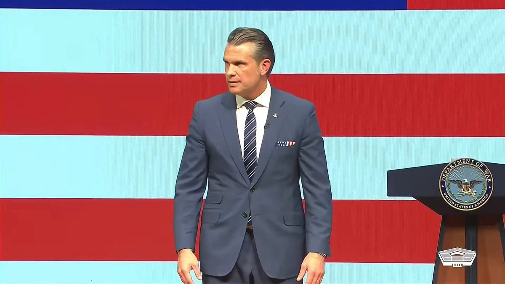
▶ Watch on X.@SECWAR “Today, at my direction, I am establishing the Office of Religious Affairs. Starting today, and for Secretaries of War after me, the Office of Religious Affairs will report straight to the top.
No staff filters. No bureaucratic dilution. A direct line to the Secretary. This won’t be a policy shop pushing paper. It will have real teeth. It will protect budgets, demand infrastructure, and strengthen religious support.
The experts – our chaplains – will finally have an advocate at the highest levels. Policy and resources will serve the mission, not smother it.”
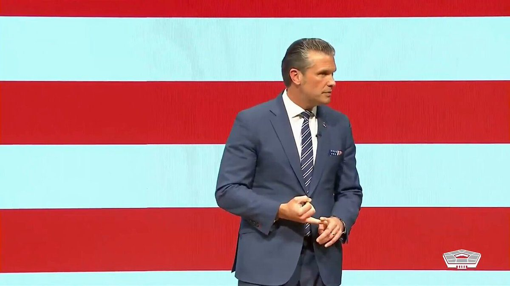
▶ Watch on XBREAKING: Secretary Pete Hegseth announces that Elon Musk will co-lead a new War Department effort studying the future of warfare during his State of the Force address.
Hegseth unveils Project Meridian, naming Musk, Palmer Luckey and Newt Gingrich to co-lead the effort under the department's Chief Technology Officer Emil Michael.
"An effort led by America's best minds to study the future of warfare."
Follow the latest developments on this story with the Fox News app:
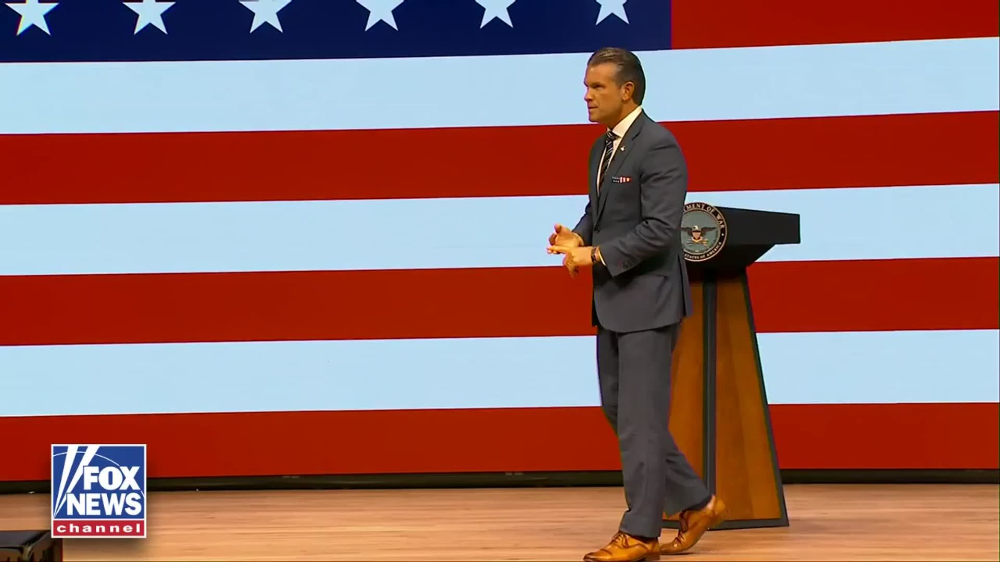
▶ Watch on XToday, at Secretary Hegseth’s direction, the Department of War is announcing the Office of Religious Affairs.
Starting today, the Office of Religious Affairs will report directly to the Secretary of War.
No staff filters. No bureaucratic dilution. A direct line to the Secretary.
This won’t be a policy shop pushing paper. It will have real teeth.
It will protect budgets, demand infrastructure, and strengthen religious support across the force.
This is DoorDash Air.
As a pilot, I can tell you that you wouldn’t build a plane and then ask if it can carry cargo. So we built @DoorDash Air from the ground up, designed around what 13 years of deliveries have taught us: what people order, how much it weighs, and how far it has to travel.
Our drones are as silent as a passing car and early tests show that we’ve gotten flight delivery times in under ~5 mins on average, so you can get your @chipotletweets & @popeyes (our first partners) and local favorites right to you, fast. The first deliveries will be in NorCal.
We proved autonomy works on the ground. Now see how it works in the sky.
Director of National Intelligence Jay Clayton on @POTUS's SI Summit: Super intelligence is a national security issue, and that was something that was recognized by everybody in the room. The commitment to the American people and their safety and security was palpable.
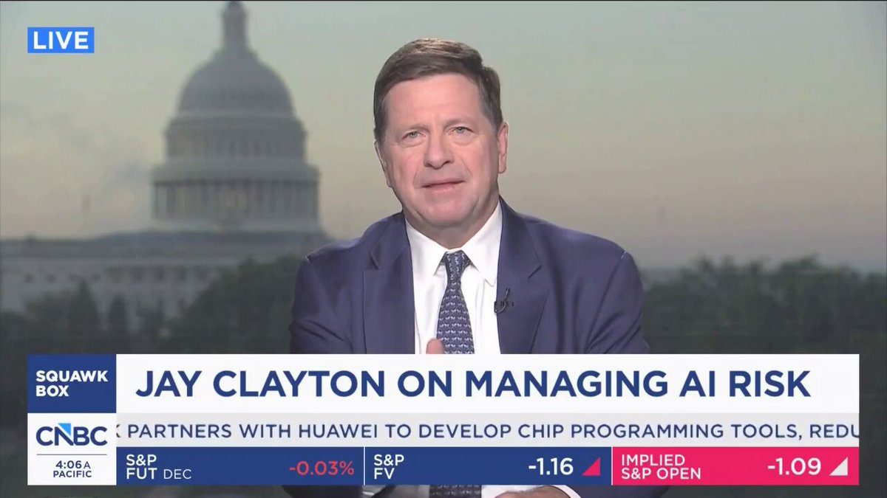
▶ Watch on X.@POTUS: "We're going to be signing a document today at about 5p renaming Artificial Intelligence because it's not artificial. We all agree on that. We're going to be renaming it Super Intelligence — officially renaming it."
▶ Watch on XFrom under the earth to beyond the moon, our warfighters will have technological superiority.
PROJECT MERIDIAN: THE FUTURE OF WARFARE 🇺🇸
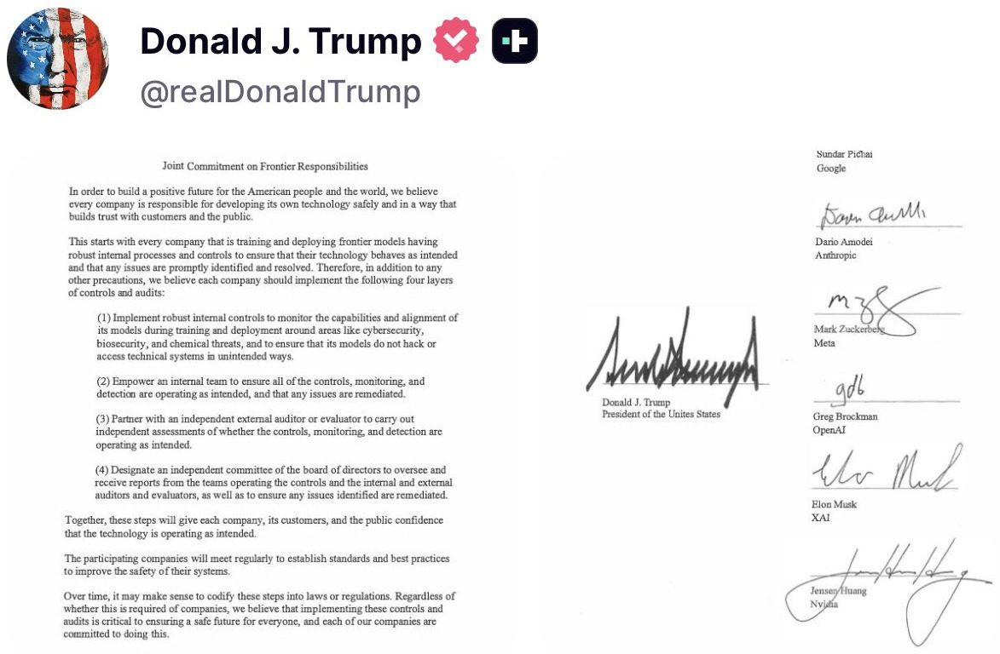
.@SecRubio: "We know how special this country is. It's the place that gave us freedom. It's the place that's given us opportunity. It's the place that has given our parents, our grandparents, and many of you the chance not just to do well in life, but to do the most important thing any of us ever want, and that is to leave our children better off than ourselves. That is what makes America special. That's why we love it. That's why we're passionate about it. That is our heritage in this country."
Starting next year, most Americans will apply for their passport entirely online. A revolution in how government works for the American people. The Trump Administration is making government simpler, faster, and more accessible.
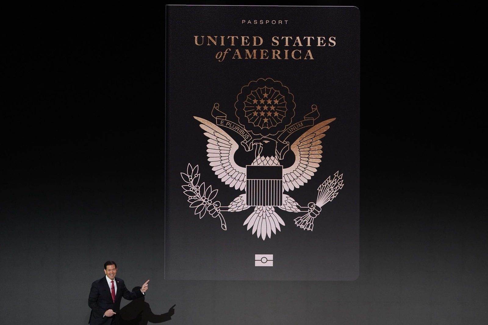
Trump: "The greatest ballroom ever built -- it's also a tremendous military complex with a drone port on top. Be careful. Don't fall over the edge. And only a Hispanic could survive that fall."
▶ Watch on X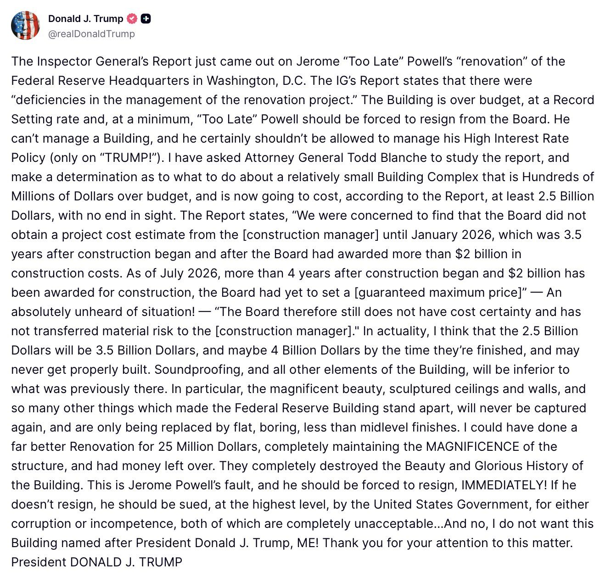
Businesses have more ways to move value than ever before.
The challenge isn't creating more forms of money. It's helping businesses use them.
Mastercard will make Open USD (OUSD) available through @BVNK, helping customers access new forms of value movement through infrastructure they already use.
It's another step toward a more connected and interoperable multi-money future.
Read more from Jorn Lambert:
Open USD (OUSD) is live on Tempo, with $400M+ in liquidity at launch.
Issued natively on Tempo, OUSD by @openstandard gives businesses a new stablecoin for payments, settlement, and treasury, with liquidity deployed across decentralized exchanges, stablecoin swaps, and bridges.
▶ Watch on XAt @KBWofficial, @CarolineDPham says the SEC and CFTC already have the regulatory authority needed to set clear rules for digital assets.
“All of that authority is actually there if you take the time to work through it.”
▶ Watch on XA licensed central securities depository is recording securities ownership on a public blockchain for the first time — on the XRP Ledger. 🇧🇷
CSD BR is partnering with Ripple to bring Brazil's regulated capital markets onchain, starting with BTG Pactual fund shares, secured by Ripple Custody.
NEW: RFK Jr. says Medicare spending on wound care patches exploded from $200 million in 2019 to $14 billion last year: "It's all stolen."
Bad actors billed Medicare billions by slapping the most expensive skin grafts on elderly and dying patients who didn't need them.
"The doctors who prescribed them would get 6% of the sales cost. And so, they were incentivized to prescribe more expensive products. In Europe, they spend 35 cents a cubic inch. We were spending $135, and that went up to $2,000 a cubic inch."
"So 2019, we were paying $200 million. Last year we spent 14 billion. All stolen. It's all stolen. And we were on track to spend 23 billion this year."
"We put an end to it, and we now have driven that cost down to somewhere around a billion dollars."
In one Arizona case, the owners of two wound care companies pleaded guilty to more than $1.2 billion in fraudulent claims. Medicare paid over $1 million per patient for grafts slapped on elderly patients who didn't need them, many of them dying in hospice.
In June, DOJ charged 11 more defendants over more than $2 billion in allograft claims, including a company accused of issuing sham invoices to inflate what Medicare paid.
It feels like every week I learn a new way people were ripping off taxpayers for billions.
More money back in YOUR wallet. 🇺🇸💸
'President Donald Trump is set on Sept. 30 to start sending $500 checks to nearly 1 million Americans his administration says were overcharged through the Affordable Care Act's federal exchange for buying health insurance.'
Eight states. Zero fraud referrals. Zero overpayments recovered in Medicaid managed care. How is that possible across states serving millions of Medicaid beneficiaries?
Arizona, California, Iowa, Michigan, New York, Pennsylvania, Utah, and Wisconsin now have 30 days to double-check their numbers and make sure oversight is happening on the ground.
Either the reporting is broken, or the oversight is. We’re going to find out which.
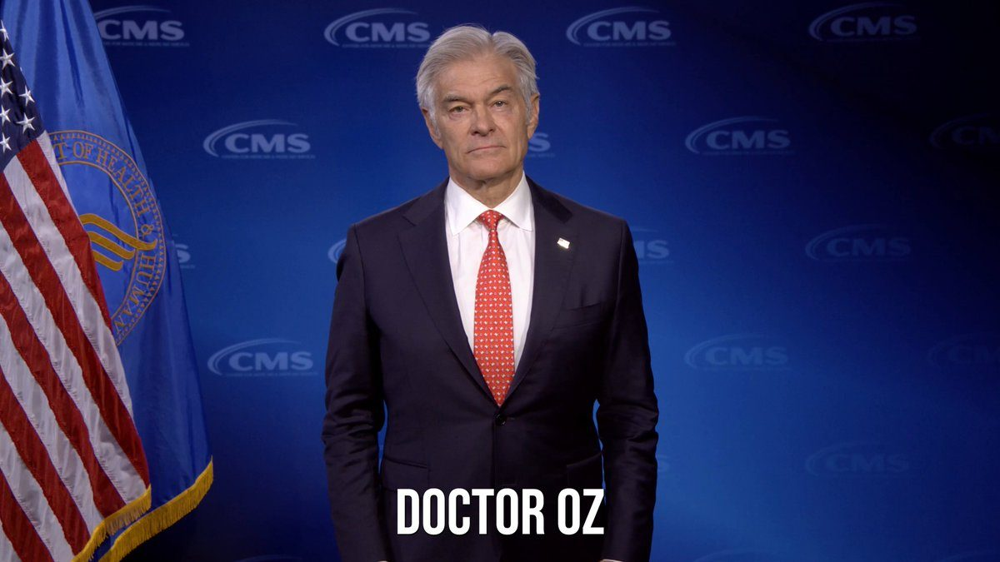
▶ Watch on XToday, we convened the second meeting of the Payment Fraud and Scams Working Group.
Cracking down on fraud has been a top priority of @POTUS and the Trump Administration from day one. Earlier this month, @USTreasury and @TheJusticeDept restrained more than $50 million in cryptocurrency tied to scam-related money laundering in one day through coordinated action against a major illicit marketplace.
We will continue working with the private sector to move with greater speed and ingenuity than the threats we face and better protect the American people.
VP Vance on the @WHFraudTF's work:
"I really do believe we have just started to scratch the surface here...There's just so much fraud out there."
▶ Watch on XThe federal government lost as high as $304 billion annually to tax fraud over a seven-year period, a watchdog found.
Large swaths of corporate media exist at this point primarily to propagandize and radicalize subsets of the population into supporting the liquidation of national sovereignty. Willfully omitted by the CNN propagandists is that these are minors who cartels have recently tried to smuggle across the Southwest Border but who were rescued by Border Patrol. These minors will now be safely and humanely reunited with their families by dedicated public servants who have devoted their lives to combatting child trafficking. It is because of the efforts of these public servants that there is no longer a raging UAC (“unaccompanied alien child”) catastrophe — the Trump Administration swiftly, urgently and righteously ended the child trafficking nightmare.
Between ten to twenty thousand children a MONTH were successfully smuggled by cartels into the US under Biden, who worked with taxpayer NGOs to deliver the smuggled children to unknown adults in the US, whereupon they disappeared. The NGOs then submitted knowingly fraudulent asylum claims to try to keep the children from ever going home or seeing their families again.
These same Democrat-NGO networks for cartels were also ruthlessly exploited by TDA and MS-13 to insert gang members into the United States and violent criminals into our high schools (automatically allowed in merely by claiming to be 17), subjecting innocent American children to unspeakable horrors.
It was one of the darkest of many dark chapters of the Biden era. The Trump Administration put the child traffickers out of business and CNN considers this a great tragedy to be urgently reversed. New depths of “journalistic” depravity and immortality.
#BREAKING: Immigration judge allows DHS to deport the Islamic Society of Milwaukee's president.
State Department revokes over 250,000 visas in broad immigration vetting crackdown
Hegseth: The number crunchers say we fired 10% of the generals and admirals. We also reduced the overall number of general officer slots by an additional 10%. So yes, 20% reduction across the board
The media calls that a purge. I call it accountability and long overdue…and frankly, the bare minimum. As usual, what the media levels as an accusation, I wear as an accomplishment. You can't change a culture with the same people who enabled it.
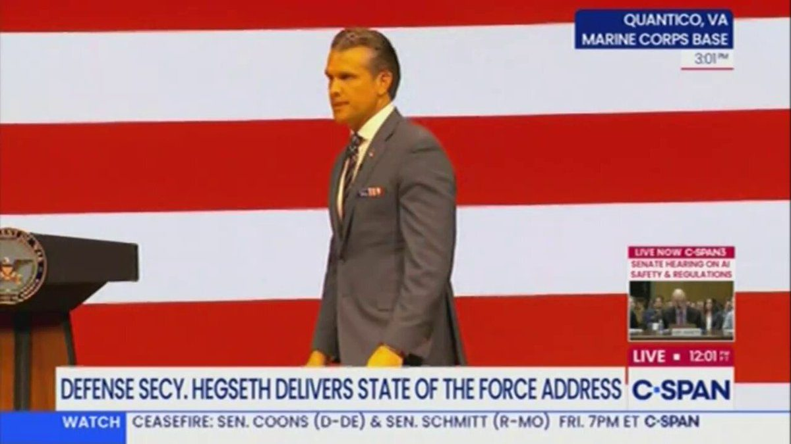
▶ Watch on X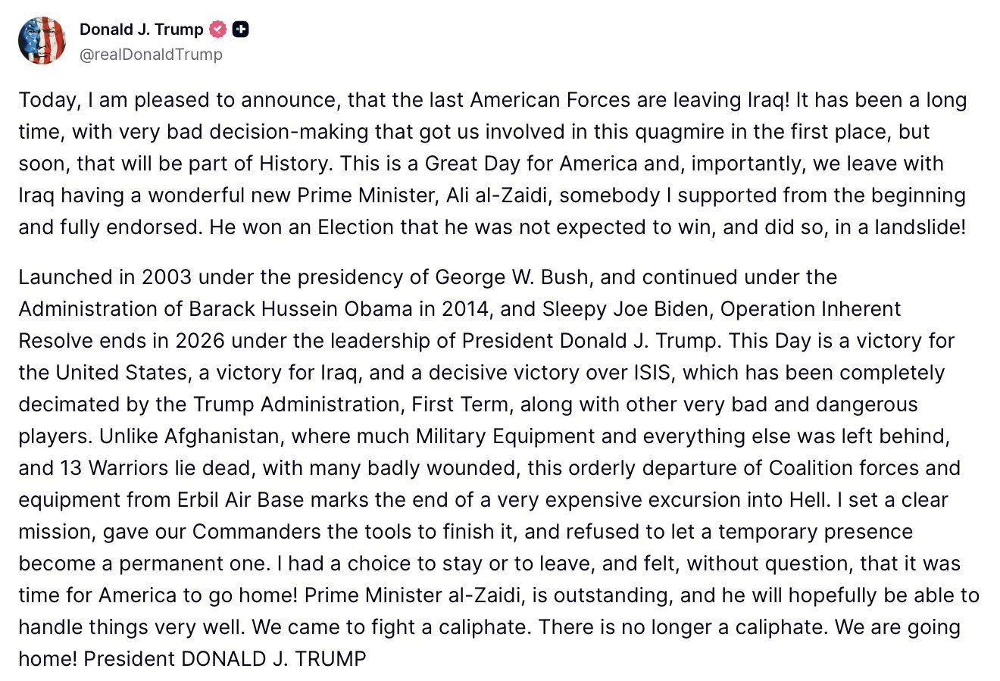
Inspector Smile is ready for science! 🫡
This is Smile’s first ultraviolet view showing an auroral substorm.
With the ultraviolet camera now operational, Smile becomes the first spacecraft since 2008 to capture the full ring of northern lights around the north pole in ultraviolet light.
1/4
Jupiter generates the strongest auroral radio-frequencies overall, with them being strong enough in the megahertz range to even be receivable from Earth's surface with a FM radio under the right conditions. Pretty neat
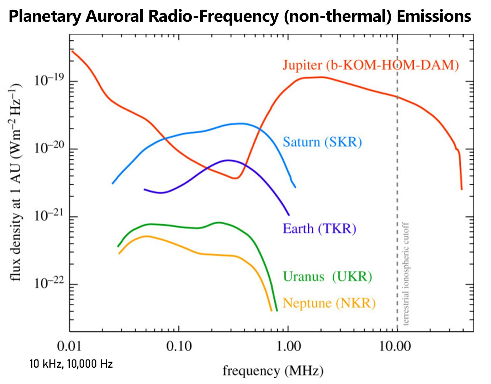
Earth "communicates" with the overall solar system and space environment via its auroral ring. Plasma aurora on Earth generates kilometric radio-frequency radiation with a frequency range of about 0.1 to 1.0 MHz, similar to Saturn's but with a lower flux density.
BREAKING NEWS:
JUDY SHELTON HAS JOINED THE U.S. TREASURY DEPARTMENT AS COUNSELOR TO THE SECRETARY.
Judy has spent decades thinking deeply about monetary policy, sound money, gold, and the architecture of the global financial system.
To now see her bringing those ideas and that experience into discussions at the highest levels of the U.S. Treasury is incredibly exciting.
My conversation with Judy on The Gold Telegraph will always be one of the highlights of my career.
Beyond her extraordinary intellect, she is thoughtful, gracious, and deeply committed to the ideas she believes in.
Full documentary: https://t.co/7b1igoWMx9
Congratulations, my friend.
Very well deserved. @judyshel
“The Community Home Lenders of America is backing the decision to have Fannie Mae and Freddie Mac publicly disclose their own credit score numbers for mortgages and mortgage-backed securities.”
I'm not a fan of accredited investor gating, but at least we're proposing to nudge the gate open a bit:
Alex, you are so kind. Thank you very much for your friendship and support in favor of sound money.
Growth Up, Core Inflation Down: The Fed's Rate Case Just Got Harder @RealPNavarro
.@AGToddBlanche: "Just a few minutes ago, the DOJ filed a Judicial Misconduct Complaint with the Eighth Circuit Court of Appeals against all but one District Court judge in the District of Minnesota for violating various judicial canons."
.@POTUS: “We’re thrilled to announce one of the largest energy infrastructure investments in American history.”
— A $22.3 billion, 6.5 GW natural-gas power facility in Encinal, Texas.
— Eight large nuclear reactors
— Alaska LNG project